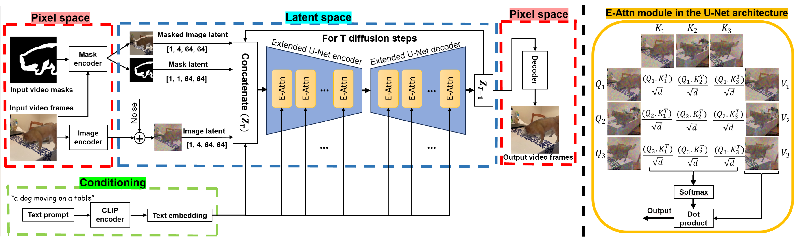

Image generation and editing have seen a great deal of advancements with the rise of large-scale diffusion models that allow user control of different modalities such as text, mask, depth maps, etc. However, controlled editing of videos still lags behind. Prior work in this area has focused on using 2D diffusion models to globally change the style of an existing video. On the other hand, in many practical applications, editing localized parts of the video is critical. In this work, we propose a method to edit videos using a pre-trained inpainting image diffusion model. We systematically redesign the forward path of the model by replacing the self-attention modules with an extended version of attention modules that creates frame-level dependencies. In this way, we ensure that the edited information will be consistent across all the video frames no matter what the shape and position of the masked area is. We qualitatively compare our results with state-of-the-art in terms of accuracy on several video editing tasks like object retargeting, object replacement, and object removal tasks. Simulations demonstrate the superior performance of the proposed strategy.
We systematically redesign the forward path of the pre-trained inpainting diffusion model by replacing the self-attention modules with an extended version of attention modules that induces dependencies between frames. Note that we do not change the architecture of the existing U-Net in the SD model. We manipulate only the computation in the forward path of the self-attention layers. This happens by using several frames instead of one in the computation of self-attention modules to extract similar information or features. That is why our approach does not add any additional training or fine-tuning. Then, having these extracted similar features, we enforce the model to edit (reconstruct) the video in a way that the regions in the frames that have similar features will be kept unchanged while the other parts of the frames will be changed according to the control commands (mask and text prompts). In this way, we ensure that the edited information will be consistent across all the video frames no matter what the shape and position of the masked area is. \cref{fig:DiffusionProcess} (right) demonstrates a visual representation of how the forward path of the extended attention works in our framework. \cref{fig:DiffusionProcess} (left) shows the whole diffusion process of our temporal consistent video editing technique. More specifically, for each diffusion step, similar to \cite{TokenFlow}, we randomly select several frames and their corresponding mask images. Then, these pairs of masks and images are fed into a pre-processor algorithm explained above. Then, the extended attention layers in the U-Net architecture, showing in \cref{fig:DiffusionProcess}, extract similar features from the selected frames. This process is repeated for $T=50$ diffusion steps.
@article{zamani2024temporally,
title={Temporally Consistent Object Editing in Videos using Extended Attention},
author={Zamani, AmirHossein and Aghdam, Amir G and Popa, Tiberiu and Belilovsky, Eugene},
journal={arXiv preprint arXiv:2406.00272},
year={2024}
}